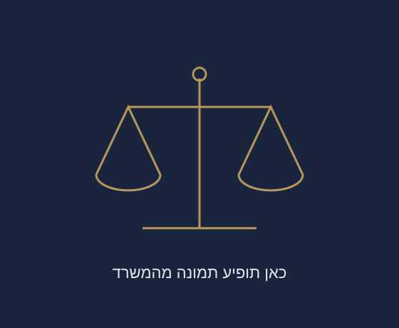

דיני משפחה וגירושין
הסכמי ממון, הסכמי גירושין, מזונות, משמורת וחלוקת רכוש – בדרך של הידברות כשאפשר, ובייצוג נחוש בבית המשפט כשצריך.
דיני משפחה · ירושה · מקרקעין · נוטריון
יש רגעים שבהם החלטה משפטית אחת משפיעה על המשפחה, על הבית ועל העתיד. עו״ד ונוטריון יריב רשף מלווה אתכם בהם באופן אישי – בצוואות וירושות, בייפוי כוח מתמשך, בהליכי משפחה ובעסקאות מקרקעין.
שיחה ראשונית קצרה – ללא התחייבות, בדיסקרטיות מלאה.
תחומי עיסוק
המשרד מעניק ייעוץ, גישור וייצוג בבתי המשפט, לצד שירותי נוטריון – הכול תחת קורת גג אחת.
הסכמי ממון, הסכמי גירושין, מזונות, משמורת וחלוקת רכוש – בדרך של הידברות כשאפשר, ובייצוג נחוש בבית המשפט כשצריך.
עריכת צוואות, צווי ירושה וצווי קיום צוואה, התנגדויות לצוואה, ניהול עיזבון ויישוב סכסוכי ירושה בין בני משפחה.
עריכה והפקדה של ייפוי כוח מתמשך, שמאפשר לכם לקבוע מראש מי יקבל החלטות בענייני רכוש, בריאות ועניינים אישיים – אם וכאשר יידרש.
ליווי עסקאות מכר ורכישה של דירות ונכסים, הסכמי שכירות, רישום זכויות, העברות ללא תמורה בין קרובים ופירוק שיתוף.
תכנון מס בעסקאות נדל״ן – מס שבח, מס רכישה ופטורים – כדי שתדעו מראש מה העלות האמיתית של העסקה.
אימות חתימה, אישור תרגום, אישור העתק נאמן למקור, צוואה נוטריונית, אישור הסכם ממון ותצהירים – בתיאום מהיר.
הליך גישור מאפשר לסיים סכסוך משפחתי, ירושתי או אזרחי בהסכמה – מהר יותר, בעלות נמוכה יותר ותוך שמירה על היחסים.
ייעוץ וליווי משלב החקירה, ייצוג בהליכי מעצר ובבתי המשפט – בדיסקרטיות ובזמינות גבוהה.

אודות
עו״ד יריב רשף עומד בראש משרד עורכי דין, גישור ונוטריון, המתמקד בדיני משפחה, ירושה ומקרקעין. לצד העבודה השוטפת עם לקוחות, הוא פעיל שנים ארוכות במוסדות לשכת עורכי הדין.
בשנים 2019-2024 כיהן כיו״ר ועדת הירושה בלשכת עורכי הדין. כיום הוא יו״ר ועדת ייפוי כוח מתמשך במחוז תל אביב וחבר ועדת מיסוי מקרקעין של הלשכה.
הגישה במשרד פשוטה: מאחורי כל תיק עומדים אנשים. לכן כל לקוח מקבל הסבר ברור, תמונת מצב כנה וליווי אישי של עו״ד רשף עצמו – מהפגישה הראשונה ועד לסיום הטיפול.
דברו איתילמה אצלנו
אתם עובדים ישירות מול עורך הדין שמטפל בתיק – לא מול מוקד ולא מול מתמחה.
פעילות בוועדות המקצועיות של לשכת עורכי הדין בתחומי הירושה, ייפוי הכוח המתמשך ומיסוי המקרקעין.
תדעו מראש מה התהליך, מה לוחות הזמנים ומה שכר הטרחה – בלי הפתעות.
מענה מהיר בטלפון ובוואטסאפ, ושמירה קפדנית על פרטיותכם.
איך זה עובד
משאירים פרטים או מתקשרים. בשיחה קצרה נבין במה מדובר ומה דחוף.
נפגשים במשרד או בזום, עוברים על המסמכים ומקבלים תמונת מצב ברורה ואפשרויות פעולה.
יוצאים לדרך – עריכת המסמכים, משא ומתן, גישור או ייצוג – עם עדכון שוטף לאורך כל הדרך.
שאלות נפוצות
ייפוי כוח מתמשך הוא מסמך שבו אדם בגיר וצלול ממנה מראש אדם שהוא סומך עליו, שיקבל עבורו החלטות אם בעתיד לא יוכל לקבל אותן בעצמו. כך נמנע הצורך בהליך מינוי אפוטרופוס בבית המשפט. את המסמך עורכים אצל עורך דין שהוסמך לכך ומפקידים אצל האפוטרופוס הכללי.
החוק אינו מחייב, אך צוואה שנערכה ללא ליווי מקצועי חשופה יותר לפגמים, לאי־בהירות ולהתנגדויות. עורך דין מוודא שהצוואה תקפה, ברורה ומשקפת בדיוק את רצונכם.
כשאדם הולך לעולמו בלי צוואה, מבקשים צו ירושה והעיזבון מתחלק לפי חוק הירושה. כשקיימת צוואה, מבקשים צו קיום צוואה שנותן לה תוקף משפטי. בשני המקרים הבקשה מוגשת לרשם לענייני ירושה.
כשנדרש אישור רשמי למסמך – למשל אימות חתימה, אישור תרגום, העתק נאמן למקור, ייפוי כוח נוטריוני לעסקת מקרקעין או אישור הסכם ממון לפני הנישואין. שכר הנוטריון קבוע בתקנות ואחיד.
עורך הדין בודק את מצב הזכויות בנכס, חובות ועיקולים, מנסח חוזה שמגן עליכם, מטפל בדיווחים לרשויות המס ודואג לרישום הזכויות על שמכם.
צור קשר
השאירו פרטים ועו״ד יריב רשף יחזור אליכם בהקדם. אפשר גם להתקשר או לשלוח הודעת וואטסאפ.